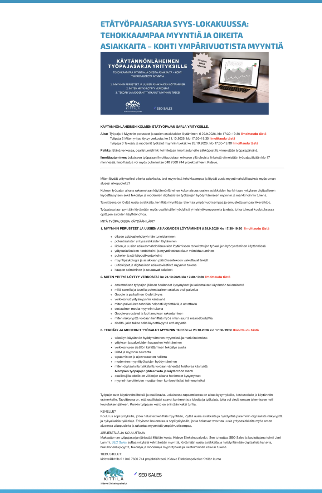
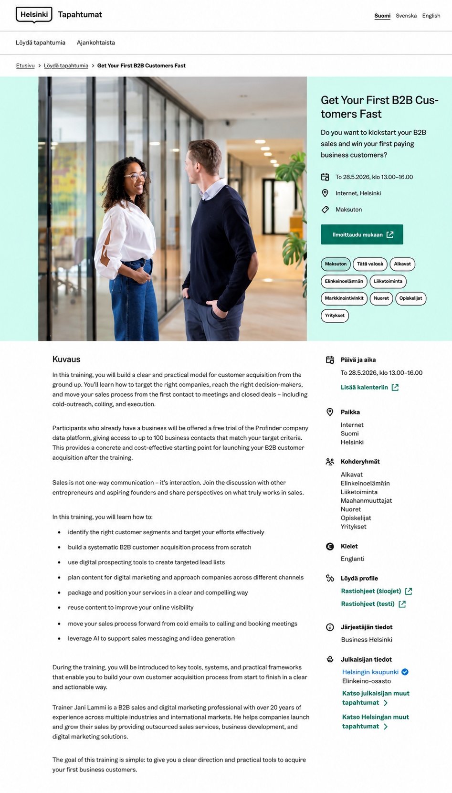

Koulutukset & webinaarit
Koulutuksia, jotka vievät osaamisen käytäntöön ja auttavat yrityksiä kehittämään myyntiä, markkinointia ja digitaalista tekemistä.
SEO Salesin koulutukset, työpajat ja webinaarit yhdistävät käytännön tekemisen, nykyaikaiset digitaaliset työkalut, tekoälyn ja uudet teknologiat. Sisältö rakennetaan osallistujien lähtötason, tavoitteiden ja yrityksen tilanteen mukaan.
Digitalisaatio muuttaa myynnin ja markkinoinnin tekemistä nopeasti, ja tekoäly sekä uudet teknologiat tuovat jatkuvasti uusia mahdollisuuksia ja työkaluja. SEO Sales tuo näitä mahdollisuuksia käytännönläheisesti esille ja huomioi koulutuksissa myös ajankohtaiset ilmiöt ja muutokset toimintaympäristössä.
Jatkuvissa koulutuskokonaisuuksissa huomioidaan myös osallistujien toiveet ja tarpeet. Jatkuva yhteistyö mahdollistaa muutoksen seuraamisen, kuuntelemisen, ohjaamisen ja käytännön tekemisen kehittämisen sen mukaan, mikä yrityksen tilanteeseen kulloinkin sopii. Yhteistyö voi tarkoittaa esimerkiksi kolmen kerran työpajasarjaa tai yrityksen jatkuvaa ohjausta, kuten tuntia kerran viikossa tai muutamaa tuntia kerran kuukaudessa. Tällaisessa mallissa voidaan olla mukana esimerkiksi uuden henkilöstön kouluttamisessa, uusien työkalujen käyttöönotossa, toimintatapojen kehittämisessä tai liiketoimintamallin muutoksessa.
Pyydä tarjous koulutuksesta →Koulutuksen teema, laajuus ja käytännön harjoitukset suunnitellaan yrityksen tavoitteiden, osallistujien lähtötason ja tarpeiden mukaan.
Aiheita voivat olla esimerkiksi:
Koulutus voidaan toteuttaa yksittäisenä koulutuksena, työpajana, webinaarina tai useamman kerran valmennuskokonaisuutena. Toteutustapa valitaan tavoitteiden, osallistujien lähtötason ja käytettävissä olevan ajan mukaan. Useamman kerran kokonaisuus mahdollistaa myös tehtävien tekemisen koulutusten välillä ja opitun viemisen käytäntöön vaiheittain.
Koulutusta voidaan usein hyödyntää myös uuden työntekijän tai tiimin perehdyttämisessä esimerkiksi digitaalisten myyntityökalujen käyttöönottoon ja uusien toimintatapojen omaksumiseen.
Koulutuksissa ja valmennuksissa ei keskitytä pelkästään teoriaan. Jokaisella kokonaisuudella on yksi tavoite: osallistujien tulee pystyä viemään opitut asiat käytäntöön mahdollisimman nopeasti.
Sisällöt rakennetaan hyödyntäen samoja toimintamalleja, joita käytämme asiakasprojekteissa. Tarvittaessa osallistujat rakentavat koulutuksen aikana oman toimintamallinsa, jota voidaan hyödyntää heti koulutuksen jälkeen.
Esimerkiksi B2B-myynnin valmennuksessa osallistujille voidaan rakentaa käytännön toimintamalli, jonka avulla yritys pystyy käynnistämään kohdennetun asiakashankinnan nopeasti. Hyödyntämällä tarkoitukseen sopivia työkaluja myös pienemmällä budjetilla voidaan päästä nopeasti liikkeelle.
Tavoitteena on, että koulutuksesta jää osallistujille konkreettinen toimintamalli — ei pelkästään muistiinpanoja.
Yhteistyö
Käytännönläheinen kolmen työpajan sarja yrityksille

Miten löydät yrityksellesi oikeita asiakkaita, teet myynnistä tehokkaampaa ja löydät uusia myyntimahdollisuuksia myös oman alueesi ulkopuolelta?
Kolmen työpajan aikana rakennetaan käytännönläheinen kokonaisuus uusien asiakkaiden hankintaan, yrityksen digitaaliseen löydettävyyteen sekä tekoälyn ja modernien digitaalisten työkalujen hyödyntämiseen myynnin ja markkinoinnin tukena.
Tavoitteena on löytää uusia asiakkaita, kehittää myyntiä ja rakentaa ympärivuotisempaa ja ennustettavampaa liikevaihtoa.
Kittilän alueella on noin 7 000 asukasta ja noin 900 yritystä. Alueen liiketoimintaa vauhdittavat vahvasti matkailu ja palvelut sekä Levi, Ylläs ja Äkäslompolo. Kittilän kultakaivostoiminta on Suomen ja koko Euroopan mittakaavassa poikkeuksellisen merkittävää liiketoimintaa.

29.9.2026 · klo 17:30–19:30
21.10.2026 · klo 17:30–19:30
28.10.2026 · klo 17:30–19:30
Työpajat ovat käytännönläheisiä ja osallistavia. Jokaisesta työpajasta jää mukaan konkreettisia ideoita ja työkaluja, jotka voi ottaa käyttöön omassa työssä heti.
Työpajakokonaisuus sopii yrityksille, jotka haluavat:

Esimerkki toteutetusta webinaarista
Suomen- ja englanninkielinen webinaari, jossa käytiin läpi käytännön toimintamalli B2B-myynnin käynnistämiseen hyödyntämällä digitaalisia työkaluja, tekoälyä ja kohdennettua asiakashankintaa.
Suomenkielinen koulutus suunnattiin kasvua tavoitteleville yrittäjille ja yrityksille.
Englanninkielinen toteutus suunniteltiin kansainväliselle osallistujaryhmälle, joka koostui Suomeen muuttaneista tai Suomessa yritystoimintaa suunnittelevista yrittäjistä.
Business Helsingin tapahtumat ja koulutukset →Käydään yhdessä läpi organisaationne tavoitteet, nykyinen koulutustarjonta, osallistujien tarpeet sekä kehittämiskohteet. Suunnittelemme niiden pohjalta koulutus- tai valmennuskokonaisuuden, joka tukee liiketoimintanne kehittämistä käytännönläheisesti ja tavoitteellisesti.
Kokonaisuus voi olla yksittäinen webinaari, työpaja tai osa laajempaa kehitysohjelmaa. Tarvittaessa siihen voidaan yhdistää myös muiden asiantuntijoiden osaamista, jolloin rakennamme juuri teidän tavoitteisiinne sopivan koulutus-, valmennus- ja puhujakokonaisuuden.
Yksittäinen koulutus tai valmennus toimii usein lähtölaukauksena pidemmälle kehitystyölle.
Halutessanne voimme koulutuksen jälkeen sparrata henkilöstöä, osallistua kehitysprojekteihin tai rakentaa yhdessä markkinointi- ja myyntikoneiston, joka tukee organisaation tavoitteita myös pitkällä aikavälillä.
Monille organisaatioille toimiva malli on esimerkiksi 2–4 koulutus-, valmennus- tai työpajapäivää vuodessa. Näin osaamista voidaan syventää vaiheittain, uusia toimintamalleja ottaa käyttöön hallitusti ja sisältöjä päivittää markkinoiden, teknologian sekä liiketoimintaympäristön kehittyessä.
Usein kysyttyä
Kyllä. Jokainen koulutus ja yritysvalmennus suunnitellaan osallistujien tavoitteiden, lähtötason, toimialan ja kohderyhmän mukaan.
Kyllä. Koulutukset ja valmennukset voidaan toteuttaa esimerkiksi yritysverkostoille, kehityshankkeille, julkisille organisaatioille tai osana laajempaa kehittämiskokonaisuutta.
Tavoitteena on, että osallistujille jää konkreettinen toimintamalli, käytännön työkalut sekä selkeä suunnitelma siitä, miten opitut asiat voidaan ottaa käyttöön omassa organisaatiossa heti koulutuksen tai valmennuksen jälkeen.